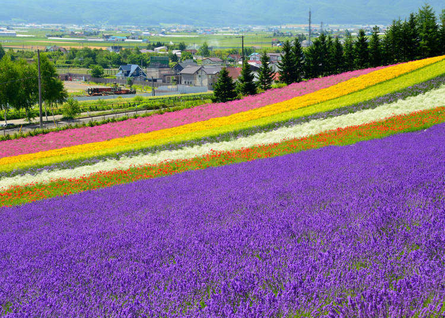
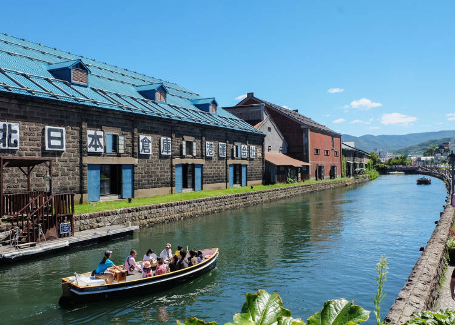
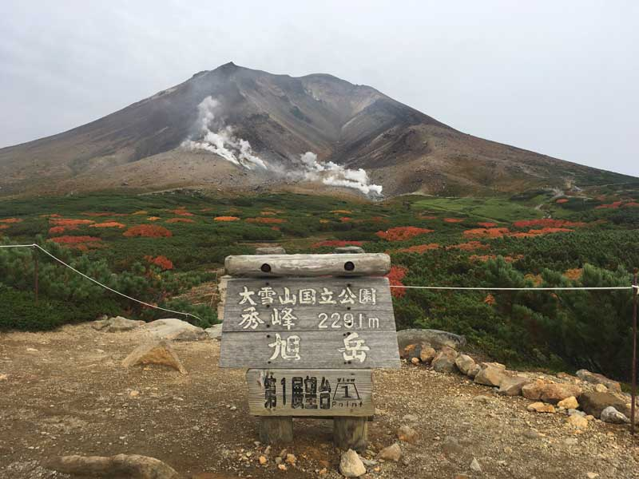
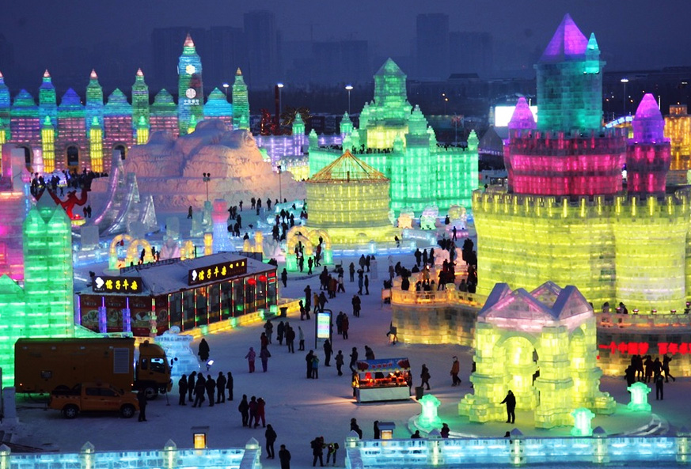
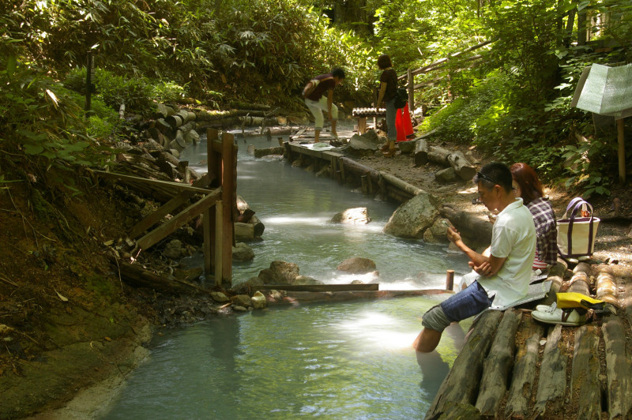
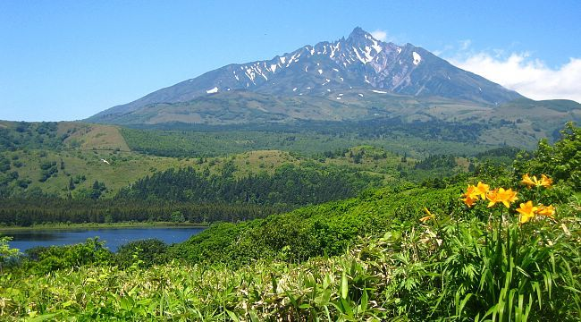
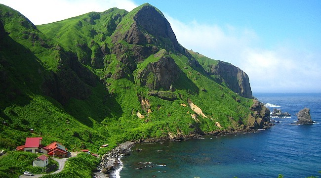
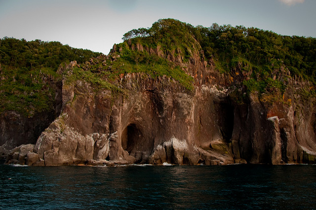
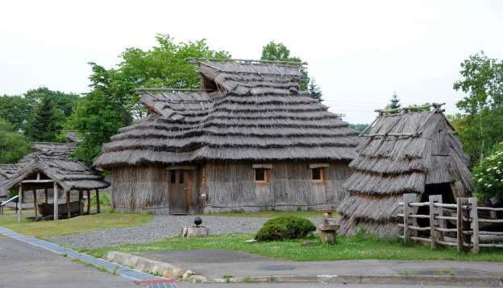
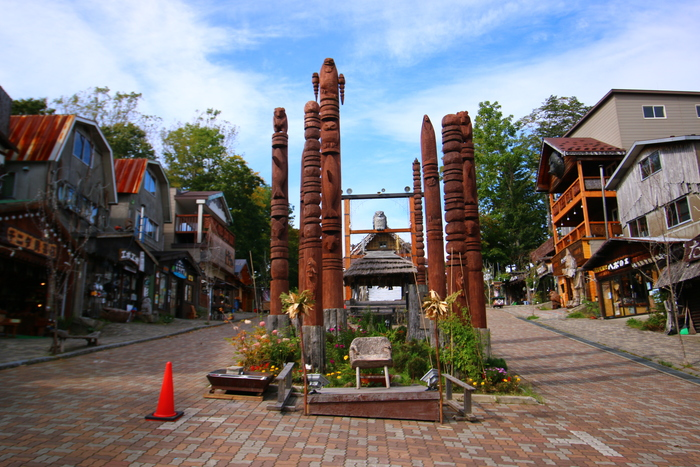

Excursión de Hokkaido
1. Hokkaido, el ‘road trip’ perfecto
Aunque pocos viajeros occidentales piensan en Japón como un destino para recorrer por carretera, la isla de Hokkaido es perfecta para alquilar un coche y conocer por libre esta parte del país. Aquí las carreteras son largas y rectas y tienen poco tráfico, están bien asfaltadas y señalizadas en inglés. La mejor época del año para este road trip por el norte de Japón es desde mediados de mayo hasta mediados de octubre. Fuera de estas fechas, la nieve y el hielo pueden convertirse en un problema. Solo hay que dejarse llevar y disfrutar de todo lo que se encontrará en el camino. En lugar de ciudades muy pobladas, Hokkaido está moteado de lagos de caldera y volcanes altísimos, y entre ellos se extienden amplios tramos de campiña y terrenos sin urbanizar; a los extremos, largas extensiones de mar solitario. Si uno se guía por el olfato, llegará a los baños de azufre, y si lo hace por las coloridas banderolas, descubrirá las casas de comidas de los pueblos pesqueros.
1.2 Otaru
Quizá uno de los lugares preferidos por los japoneses por su atmósfera única, indudablemente romántica. Fue uno de los puertos pesqueros más importantes de Hokkaido y el lugar en donde se construyó la primera estación de ferrocaril de la prefectura. Los edificios que bordean el canal que la recorre de un lado a otro están increíblemente bien cuidados y son muy bonitos. Además, ofrecen restaurantes de muy buena calidad donde disfrutar de platos de marisco fresco. Entre sus atractivos turísticos más originales está el Museo de las Cajas de Música, que hará las delicias de los aficionados (o no) a este instrumento.
 2. El Parque Nacional de Daisetsuzan: caminar por la azotea de Hokkaido
Una de las experiencias más inolvidables del viaje a Hokkaido es recorrer algunos de los senderos del Parque Nacional de Daisetsuzan, el más grande de Japón, con más de 2300 km2. Fundado en 1934, Daisetsuzan significa “gran montaña de nieve”, un adelanto exacto de lo que se encontrará: volcanes activos, onsen remotos, lagos cristalinos y espesos bosques cubiertos de nieve en invierno. Y todo ello apenas alterado por la presencia humana: hay muy pocos turistas y casi todos los visitantes se alojan en los pueblos termales de la periferia.
Los ainu (como se conoce a los nativos originales de Hokkaido) llamaban kamui mintara (el patio de recreo de los dioses) a la zona que hoy ocupa el parque. Los dioses eran los animales, encabezados por el oso pardo, el dios de las montañas, que dominaba el territorio. Para los excursionistas con más experiencia, Daisetsuzan es una excelente oportunidad de aventurarse en tierras salvajes, e incluso, de observar osos desde una pasarela de madera o en un autobús blindado que recorre el parque. La gran travesía del Daisetsuzan, de 55 kilómetros, es todo un reto: abarca el parque longitudinalmente y se puede completar entre cinco y siete días. A lo largo de la ruta hay algunos refugios muy básicos, pero lo más recomendable es ir con tienda y material de acampada.
3. Nieve y cervezas en Sapporo
Sapporo es el nombre de la cerveza más famosa y antigua de Japón, fundada en 1876. Pero Sapporo es también la quinta ciudad más grande de Japón y la capital de la prefectura de Hokkaido, un dinámico centro urbano con un buen panorama gastronómico, cafés elegantes, animada vida nocturna bajo los neones y compras en abundancia. Aunque para muchos viajeros Sapporo es sobre todo una parada necesaria camino de las montañas y manantiales de Hokkaido, la ciudad tiene atractivos suficientes como para pasar unos días: en invierno por su famoso Festival de la Nieve y en verano, por sus festivales gastronómicos y de cerveza. Si no se coincide con ningún festival siempre se podrá visitar la principal atracción de la ciudad: la fábrica original de la cerveza Sapporo, un bonito edificio de ladrillo envuelto en hiedra que puede recorrerse en un circuito para terminar luego en el Sapporo Biergarten y tomar más cerveza y jingisukan (plato de cordero).
En invierno, la atracción se centra en las pistas de esquí. La pista de saltos del Okura-yama se construyó en la ladera de este monte para los Juegos de Invierno. Se puede subir en ascensor y contemplar la pista desde arriba antes de probar el divertido simulador de saltos del museo. La pista sigue en activo y, con un poco de suerte, es posible que la visita coincida con una sesión de entrenamientos.
4. Noboribetsu Onsen
El onsen es una tradición cultural japonesa, y Hokkaido el lugar perfecto para disfrutar de estos baños termales al aire libre. Los viajeros fatigados podrán despedirse de las agujetas en cualquiera de los numerosos onsen que hay en la isla. Especialmente en Noboribetsu Onsen, una auténtica localidad onsen, cuyo olor a azufre se percibe desde kilómetros de distancia, ya que posee numerosos manantiales termales con aguas ricas en minerales.
Estos baños tuvieron mucha fama cuando se convirtieron en un resort de salud para los soldados heridos en la guerra ruso-japonesa (1904-1905) y siguen siendo el onsen más famoso de Hokkaido. Las aguas proceden de un humeante foso volcánico que se alza sobre la localidad. Según la leyenda, aquí es donde vive el oni Yukujin, un demonioamable que trae buena suerte y que puede verse en cualquiera de las muchas estatuas que hay por todas partes.
Para ver un onsen realmente original se puede ir al puerto de Hakodate, donde se encuentra el Mizunashi Kaihin Onsen, un onsen en el mar. La clave está en visitarlo en el momento justo, cuando las dos principales pozas de roca quedan cubiertas por el mar con la marea alta… toda una delicia.
5. Una escapada al Japón remoto: las islas Rishiri-to y Rebun-to
Al norte del norte, en el punto más remoto del país, se encuentran estas dos islas que forman parte de un Parque Nacional y que no están urbanizadas, excepto algunas aldeas pesqueras. Apenas hay turismo y son la oportunidad de trasladarse a un lugar realmente diferente y al margen del resto del mundo. Se puede ir en ferri y lo suyo es probar el uni (erizo de mar), la especialidad gastronómica típica de las islas.
Los visitantes se acercan a estas islas en verano, para subir al pico Rishiri-zan o para ir de excursión por las crestas de Rebun-to, ver plantas silvestres únicas o asomarse a los pantanos de Sarobetsu, donde se producen espectaculares floraciones. Hay rutas para excursiones de todos los niveles, y muchas terminan en un onsen frente al mar o en lo alto de una cima con vistas de 360o de la isla. También hay rutas perfectas para el ciclismo e incluso posibilidades de practicar esquí o surf en Rishiri, con rutas de esquí de fondo (exigentes y sin remontes), con pocos esquiadores alrededor e impresionantes vistas al océano. En cuanto al surf, esta zona no es tan fría como parece: septiembre y octubre son los mejores meses, después de que el sol de verano haya calentado el mar y los tifones del sur se desplazan al norte dejando grandes olas.
 6. Un viaje al fin del mundo: Shiretoko
Shiretoko-hanto, la península que forma este Parque Nacional, era conocida por los ainu como “el fin del mundo”. Es un territorio magnífico, reconocido con el título de Patrimonio Mundial de la Unesco, y uno de los pocos enclaves naturales vírgenes que quedan en Japón. Suele atraer a los senderistas más expertos, pero también ofrece excursiones más sencillas a lagos y cascadas, circuitos naturales por la costa y manantiales termales ocultos en los bosques. Hokkaido, y concretamente esta zona, es el territorio de un tipo de osos distinto al pequeño oso negro de Honshu. Los de Hokkaido son pardos, mucho más grandes y agresivos, por lo que conviene tomar todas las precauciones. Muchos excursionistas se ponen campanillas en las mochilas, y los osos, con solo escucharlas, se asustan y evitan al viajero a toda costa.
7. Vida con los ainu en el Parque Nacional de Akan
El Parque Nacional de Akan fue uno de los primeros que se crearon en el país, con picos volcánicos, varios lagos de caldera, y manadas de ciervos, onsen rejuvenecedores y una pequeña aldea ainu. Las montañas son el gran atractivo para los senderistas, pero también hay quien llega hasta aquí para conocer la auténtica cultura tradicional de Hokkaido. Solo un puñado de ainus hablan todavía su lengua tradicional y sus prácticas culturales parecen cosa del pasado, aunque hay nuevos artistas, músicos y chefs que apuestan por ellas y están dándoles una vida nueva.
Kotan’ainu es la aldea ainu más grande de la isla, con 36 viviendas. Sus habitantes viven de promocionar su cultura: bailan sobre el escenario, cocinan pochie (empanadillas de patata fermentada) en los restaurantes y venden madera y artículos de cuero con técnicas y motivos tradicionales. Al anochecer, celebran una procesión para encender antorchas por todo el pueblo. La aldea tiene también incluso un pequeño museo de la cultura ainu, aunque el mejor museo para conocer esta cultura es el Centro Ainu de Sapporo.
 Dialecto
El dialecto o dialectos de Hokkaido, generalmente denominados Hokkaidō-ben, tienen sus raíces en establecimientos practicamente nuevos del Japón continental. La gran mayoría de Hokkaidō se emplazó a partir de una mezcla de villas y pueblos, especialmente las regiones de Tōhoku y Hokuriku, desde el período Meiji hasta la actualidad, por lo que un sin fin dialectos clásicos de los nipones se convergieron en Hokkaidō.
El vínculo del dialecto de Hokkaidō con el resto de los japoneses, y si existe incluso un dialecto Hokkaidō coherente o no es tema que se encuentra en disputa. Un autor en 2003 estableció tres posibles hipótesis: Las variedades lingüísticas que se observan en las villas son parte del dialecto de Kantō, mientras que los dialectos costeros son parte del dialecto de Tōhoku Hay un solo dialecto de Hokkaidō, que es una rama distinta del este de Japón Hay un dialecto de Hokkaidō, pero se origina a partir del dialecto de Niigata, uno de los dialectos de Tōkai-Tōsan, lo que engloba un tipo de cambio con pistas japonesas occidentales. El dominio de Tōhoku es más notable en las áreas de playa, muy en específico en la península de Oshima en el extremo meridional, donde el dialecto local se llama comúnmente Hama-kotoba. El dialecto típico de la urbe de Sapporo es bastante parecido al japonés estándar. Las particularidades occidentales pueden haber sido adquiridas por mercaderes de Kansai y Hokuriku cuando recorrían la ruta comercial de Kitamaebune.
Diferencias con el Japonés estándar
Este ha recibido influencia de varios dialectos y por eso se le considera un dialecto joven. Debido a que en el periodo Meiji gente de varias regiones de Japón vivían allí (sobre todo de la región Tōhoku y Hokuriku); crearon un nuevo dialecto.
Gramática
- Las formas imperativas en verbos Ichidan son ro o yo. Ejemplo: 食べろ (Tabero) o 食べよう (Tabeyou) significan ¡come!, en este dialecto se reemplazan por: re, ejemplo: 食べれ (¡Tabere!).
- Para los verbos Godan (verbos u) es: Mizenkei + renai. Ejemplo: 書かれない (Kakarenai): 'No ser capaz de escribir'.
- ではない (Dewanai) es reemplazado por でない (denai).
Partículas
- っしょ (ssho): Ésta reemplaza a だろう (darou) y a でしょう (deshou). Ejemplo: いいっしょ(iissho) > いいでしょう (iideshou): Quizá sea bueno.
- っしょや (sshoya): Tiene el mismo uso que っしょ(ssho), pero ésta implica más énfasis.
- Verbo o Adjetivo + べ(be) y Sustantivo + だべ(dabe):
- Ejemplo :
- 遊ぼうよ (Asobouyo) > 遊ぶべ (Asobu be): ¿Jugamos?
- 寒いだろうね (Samui darou ne) > 寒いべ (samui be): ¿Será frío?
- これだろう (Kore darou) > これだべ (Kore da be): Quizá sea frío